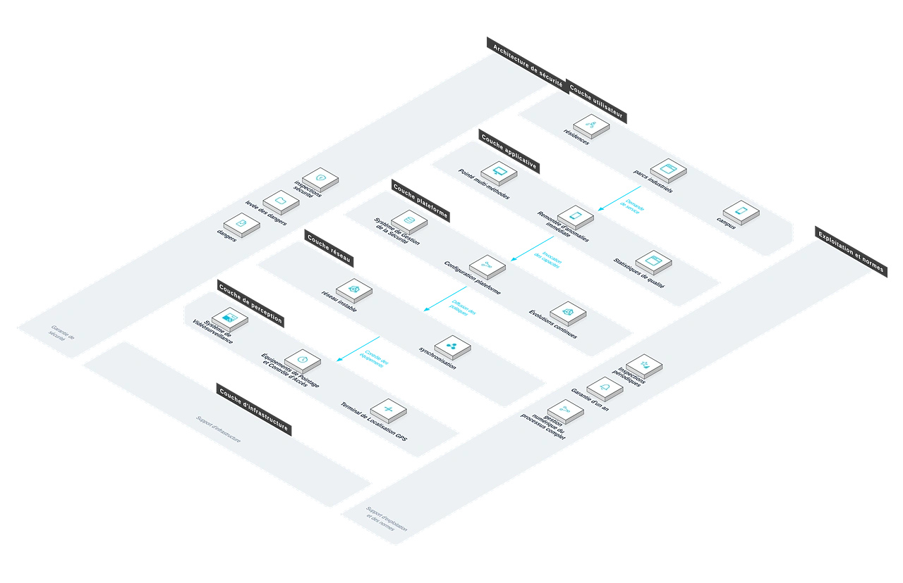

Fournit des solutions numériques de gestion des rondes pour résidences, parcs industriels, centres commerciaux, campus et hôpitaux, répondant à l'exécution incontrôlable, à la remontée lente et à la qualité non mesurable des rondes traditionnelles, et réalisant la gestion numérique du processus complet et une boucle de liaison sécurité.
核心能力
Pointé multi-méthodes
NFC/QR/Bluetooth/GPS — quatre méthodes couvrant les scénarios intérieurs et extérieurs.
Positionnement & relecture des traces
L'état des rondes visible en un coup d'œil, chaque pointé traçable.
Remontée d'anomalies immédiate
Preuves photo et notes vocales poussées aussitôt vers les responsables.
Vérification vidéo liée
Les pointés font remonter les caméras proches ; les anomalies sont vérifiées automatiquement.
Statistiques de qualité
Rondes manquées, taux de ponctualité et traitement des anomalies quantifiés pour l'évaluation.
方案架构

优势与交付
Avec une plateforme mobile de gestion des rondes et une capacité de liaison vidéo, nous aidons à fiabiliser l'exécution des rondes et à accélérer la réponse de sécurité, avec planification des points, déploiement des équipements, configuration de la plateforme et formation des équipes.
Avantages différenciants
Quatre modes de pointage
NFC, QR code, Bluetooth et GPS couvrent tous les scénarios, avec un déploiement flexible.
Patrouille visible en temps réel
Positionnement en direct et relecture des trajets : l'exécution des patrouilles est transparente.
Réponse immédiate aux anomalies
Incidents signalés instantanément et reliés automatiquement à la vérification vidéo.
Qualité quantifiable
Statistiques complètes pour l'évaluation des patrouilles et l'optimisation des parcours.
Pointage hors ligne
Pointage hors ligne avec synchronisation : les patrouilles continuent même avec un réseau instable.
Liaison avec la vidéosurveillance
Les points d'anomalie appellent automatiquement les caméras voisines pour une vérification précise.
Processus de mise en œuvre
Étude des besoins
Recenser le périmètre, les équipes et les exigences d'évaluation.
Planification des points
Implanter les points et modes de pointage selon les risques.
Déploiement
Poser les étiquettes et déployer les terminaux.
Configuration plateforme
Parcours, équipes et règles d'alerte.
Formation
Former les agents et administrateurs.
Mise en exploitation
Remise officielle après réglage en phase d'essai.
Garantie de service
Valeur client
Les patrouilles s'exécutent conformément au plan sans omission ; la rapidité de réponse augmente et le taux d'incidents baisse ; parcours et effectifs optimisés.